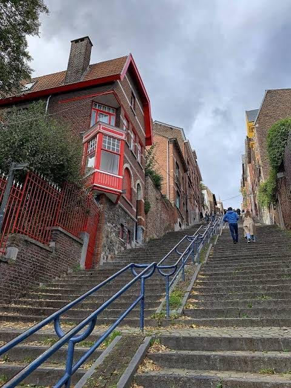

CityLoop Quest Liège


Avec des enfants, alternez patrimoine dense et espaces de respiration. La Boverie, Avroy, les quais et certains musées conviennent très bien pour couper une journée. Bueren peut devenir un défi amusant, mais mieux vaut le présenter comme une aventure que comme un simple raccourci.
Pour les poussettes et les personnes à mobilité réduite, le centre plat, les quais, la Boverie et plusieurs musées sont plus confortables que les Coteaux. Certaines rues anciennes, pavées ou en pente, demandent de prévoir des détours.
L’Aquarium-Muséum, la Maison de la Métallurgie, le Musée de la Vie wallonne ou La Boverie peuvent très bien fonctionner en famille, car ils offrent des objets concrets, des animaux, des machines, des images ou des espaces plus vastes qu’une simple succession de façades.
Gardez aussi des pauses gourmandes. Une gaufre chaude, un chocolat, une terrasse ou un petit tour sur les quais redonnent de l’énergie et évitent le syndrome du “encore une église”. Liège se visite mieux lorsque tout le monde garde le sourire.